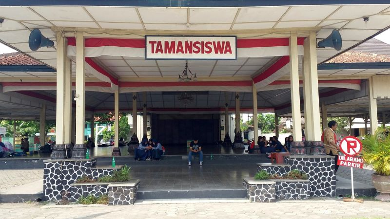

"Setiap orang menjadi guru, setiap rumah menjadi sekolah."- Ki Hadjar Dewantara
Perguruan Tamansiswa pertama kali didirikan di Yogyakarta, yang dahulu dikenal dengan nama Mataram. Hari dan tanggal berdirinya ialah hari Senin Kliwon, tanggal 3 Juli 1922, yang bersamaan dengan tanggal 8 bulan Zulkaidah tahun Ehe 1852 dan tahun Hijrah 1348. Berdirinya Perguruan Tamansiswa diberikan pertanda Candrasengkala "Lawan Sastra Ngesti Mulya", yang artinya "Dengan Pengetahuan (pendidikan) mencapai kemuliaan", yang sampai sekarang ini masih relevan untuk dipakai. Setiap perkataan dalam candra sengkala tersebut menunjukkan suatu angka; Lawan =2; Sastra = 5; Ngesti = 8, dan Mulya = 1
Prinsip dasar dalam sekolah/pendidikan Taman Siswa yang menjadi pedoman bagi seorang guru dikenal sebagai Patrap Triloka. Konsep ini dikembangkan oleh Dewantara setelah ia mempelajari sistem pendidikan progresif yang diperkenalkan oleh Maria Montessori di Italia dan Rabindranath Tagore di India danBenggala). Patrap Triloka memiliki unsur-unsur (dalam bahasa Jawa): ing ngarsa sung tulada (ꦲꦶꦁꦔꦂꦱꦱꦸꦁꦠꦸꦭꦝ, "(yang) di depan memberi teladan"), ing madya mangun karsa (ꦲꦶꦁꦩꦢꦾꦩꦔꦸꦤ꧀ꦏꦂꦱ, "(yang) di tengah membangun kemauan/inisiatif"), tut wuri handayani (ꦠꦸꦠ꧀ꦮꦸꦫꦶꦲꦤ꧀ꦢꦪꦤꦶ, "dari belakang mendukung"). Patrap Triloka dipakai sebagai panduan dan pedoman dalam dunia pendidikan di Indonesia.
Last updated
"Mari kita bergandeng tangan membesarkan Tamansiswa untuk kebesaran Indonesia, " demikian Sri-Edi Swasono dalam sambutannya. Menurutnya tugas ke depan sangat berat. Diharapkannya perbedaan untuk menuju kebersamaan.
-Posted on 28 November 2022-
Terharu dan bangga bisa memberikan sambutan dalam pembukaan kongres xxii tamansiswa,rabu (26/10) Ki Nanang Rekto Wulanjaya cucu Ki Hadjar Dewantara,dengan terbata-bata menahan haru saat menyampaikan sambutannya. Membuat hadirin pendengar merasa terharu.
-Posted on 26 OKtober 2022-
Rabu (26/10) pukul 11.00 dalam pembukaan kongres xxii tamansiswa abad ke 2 diadakannya pertunjukan dolanan anak yang diperankan oleh anak-anak dari kesenian. Pertunjukan ini banyak ditonton oleh seluruh tamu undangan dari berbagai cabang di tamansiswa. Hal ini mengundang banyak perhatian para tamu.
-Posted on 26 OKtober 2022-
Add comment here...
You can put your account too